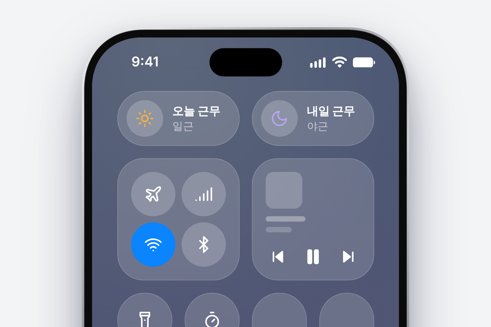
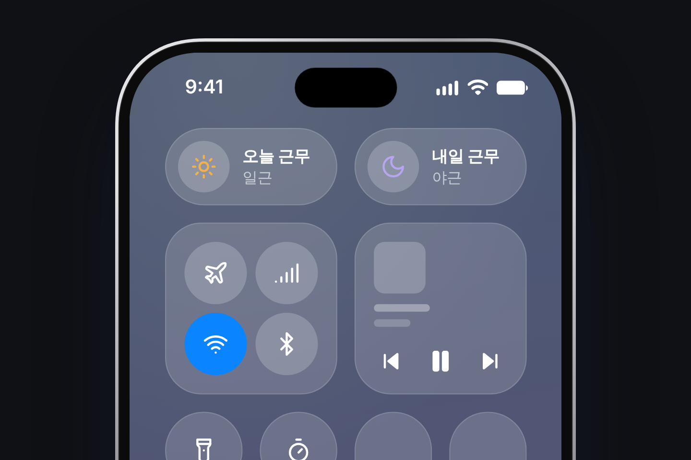

<title>교대온 제어 센터</title>
<meta name="claude:viewport-fit-sides" content="cover">
<style>
/* 레이아웃: widget.html과 같은 토스 스타일 페이지. 주인공은 제어 센터 이미지 하나, 그 아래 원칙 세 줄과 짧은 근거.
   토스 색 값은 제3자 정리 페이지(oppadu)의 값이며 공식 토큰이 아닙니다. 이미지는 Stageshow 예시(examples/shiftwork-cc)에서 찍었습니다. */
:root {
  --page: #f2f4f6; --ink: #191f28; --muted: #6b7684; --track: #e5e8eb; --accent: #3182f6; --thumb: #ffffff;
  --card: #ffffff; --card-line: transparent;
  --font: 'Toss Product Sans', -apple-system, BlinkMacSystemFont, 'Apple SD Gothic Neo', 'Noto Sans KR', 'Noto Sans CJK KR', 'Segoe UI', sans-serif;
}
@media (prefers-color-scheme: dark) {
  :root:not([data-theme="light"]) {
    --page: #0f1115; --ink: #f2f4f6; --muted: #8b95a1; --track: #1f222a; --accent: #4795ff; --thumb: #2c303a;
    --card: #1a1d24; --card-line: #232730; color-scheme: dark;
  }
}
:root[data-theme="dark"] {
  --page: #0f1115; --ink: #f2f4f6; --muted: #8b95a1; --track: #1f222a; --accent: #4795ff; --thumb: #2c303a;
  --card: #1a1d24; --card-line: #232730; color-scheme: dark;
}
* { box-sizing: border-box; }
body {
  margin: 0; background: var(--page); color: var(--ink); font-family: var(--font);
  padding-block: 32px 56px;
  padding-left: max(16px, env(safe-area-inset-left, 0px));
  padding-right: max(16px, env(safe-area-inset-right, 0px));
  letter-spacing: -.01em;
  word-break: keep-all;
}
main { max-width: 720px; margin: 0 auto; display: grid; gap: 24px; }
header { display: grid; gap: 14px; }
h1 { margin: 0; font-size: 28px; font-weight: 700; letter-spacing: -.03em; line-height: 1.3; text-wrap: balance; }
header p { margin: 0; color: var(--muted); font-size: 15px; line-height: 1.5; }
.toggle { display: inline-grid; grid-template-columns: 1fr 1fr; padding: 4px; border-radius: 14px; background: var(--track); width: 200px; }
.toggle button { font: inherit; font-size: 14px; font-weight: 600; color: var(--muted); background: transparent; border: 0; padding: 9px 0; border-radius: 10px; cursor: pointer; }
.toggle button[aria-pressed="true"] { background: var(--thumb); color: var(--ink); box-shadow: 0 1px 4px rgba(0, 23, 51, .08); }
.toggle button:focus-visible { outline: 3px solid var(--accent); outline-offset: 2px; }

/* 이미지: 테마와 폭에 맞는 한 장만 보임 */
.shot { margin: 0; border-radius: 28px; overflow: hidden; }
.shot img { display: block; width: 100%; height: auto; }
.shot .d { display: none; }
:root[data-theme="dark"] .shot .l { display: none; }
:root[data-theme="dark"] .shot .d { display: block; }
@media (prefers-color-scheme: dark) {
  :root:not([data-theme="light"]) .shot .l { display: none; }
  :root:not([data-theme="light"]) .shot .d { display: block; }
}
.note { margin: -12px 0 0; font-size: 12px; color: var(--muted); }

ul { margin: 0; padding: 0; list-style: none; display: grid; gap: 12px; font-size: 15px; line-height: 1.6; }
li { padding-left: 16px; position: relative; }
li::before { content: ""; position: absolute; left: 0; top: .7em; width: 5px; height: 5px; border-radius: 50%; background: var(--accent); }
li b { font-weight: 700; }

.cards { display: grid; grid-template-columns: repeat(auto-fit, minmax(260px, 1fr)); gap: 12px; }
.card { background: var(--card); border: 1px solid var(--card-line); border-radius: 20px; padding: 20px; display: grid; gap: 8px; align-content: start; }
.card h2 { margin: 0; font-size: 16px; font-weight: 700; letter-spacing: -.02em; }
.card p { margin: 0; font-size: 14px; line-height: 1.6; color: var(--muted); }
.card q { color: var(--ink); quotes: "“" "”"; }

.src { font-size: 12px; color: var(--muted); line-height: 1.7; margin: 0; }
.src a { color: var(--muted); }
@media (prefers-reduced-motion: no-preference) { body { transition: background .2s ease, color .2s ease; } }
</style>

<main>
  <header>
    <h1>교대온 제어 센터</h1>
    <p>아이폰 제어 센터에 오늘 근무와 내일 근무를 컨트롤 두 개로 넣은 목업입니다.</p>
    <div class="toggle" role="group" aria-label="화면 모드">
      <button type="button" id="b-light" aria-pressed="false">라이트</button>
      <button type="button" id="b-dark" aria-pressed="false">다크</button>
    </div>
  </header>

  <figure class="shot">
    <picture class="l">
      <source media="(max-width: 560px)" srcset="../images/export/cc-compact-light.png">
      
    </picture>
    <picture class="d">
      <source media="(max-width: 560px)" srcset="../images/export/cc-compact-dark.png">
      
    </picture>
  </figure>
  <p class="note">디자인 목업입니다. 앱의 실제 기능이 아닙니다.</p>

  <ul>
    <li><b>시스템 구조 그대로.</b> 컨트롤 하나에 심볼, 제목, 값 하나씩만 둡니다. 오늘과 내일은 컨트롤 두 개로 나눴습니다.</li>
    <li><b>색은 심볼에만.</b> 해는 일근 색, 달은 야근 색입니다. 판과 글자는 제어 센터 기본 모습 그대로입니다.</li>
    <li><b>값은 짧게.</b> 값에는 근무 종류만 넣습니다. 출퇴근 시각은 위젯과 앱에서 보여 줍니다.</li>
  </ul>

  <section class="cards" aria-label="근거와 한계">
    <div class="card">
      <h2>근거</h2>
      <p>Apple HIG는 <q>Controls contain a symbol image, a title, and, optionally, a value.</q>라고 하고, 제어 센터에서는 <q>a control displays its symbol and, at larger sizes, its title and value.</q>라고 합니다. 그래서 글자가 보이는 중간 크기를 썼습니다.</p>
    </div>
    <div class="card">
      <h2>확인하지 못한 것</h2>
      <p>칸 크기, 간격, 반투명 질감은 눈대중입니다. 틴트는 HIG에서 <q>a control toggle’s symbol in its on state</q>에 적용된다고만 나와 있어, 버튼 컨트롤에 고정 색을 줄 수 있는지는 모릅니다. 아이콘은 SF Symbols 대신 lucide를 썼습니다.</p>
    </div>
  </section>

  <p class="src">출처: <a href="https://developer.apple.com/design/human-interface-guidelines/controls">Apple HIG, Controls</a>. 바탕과 글자 색은 제3자 정리 페이지 <a href="https://www.oppadu.com/tools/design-systems-site/brand/toss.html">oppadu Toss 디자인 시스템 갤러리</a>와 <a href="https://www.oppadu.com/tools/design-systems-site/brand/toss-dark-mode.html">다크 모드 페이지</a> 값을 참고했고, 공식 토큰은 아닙니다.</p>
</main>

<script>
(function () {
  var root = document.documentElement, bl = document.getElementById('b-light'), bd = document.getElementById('b-dark');
  function current() {
    var t = root.getAttribute('data-theme');
    if (t) return t;
    return window.matchMedia && matchMedia('(prefers-color-scheme: dark)').matches ? 'dark' : 'light';
  }
  function sync() { var t = current(); bl.setAttribute('aria-pressed', t === 'light'); bd.setAttribute('aria-pressed', t === 'dark'); }
  function set(t) { root.setAttribute('data-theme', t); sync(); }
  bl.addEventListener('click', function () { set('light'); });
  bd.addEventListener('click', function () { set('dark'); });
  sync();
})();
</script>
